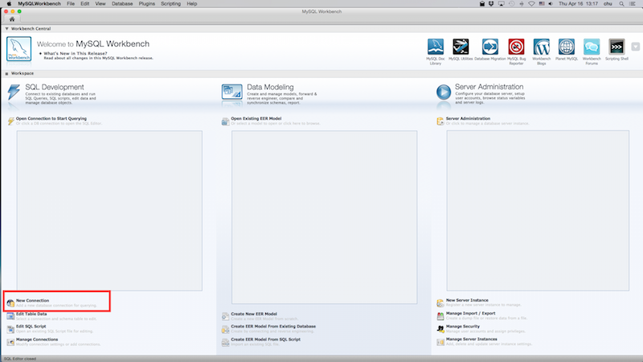
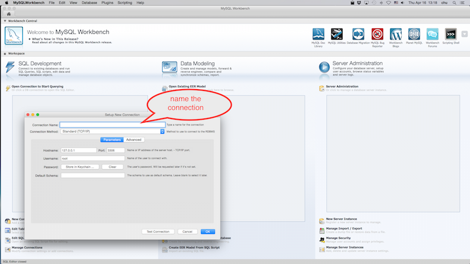
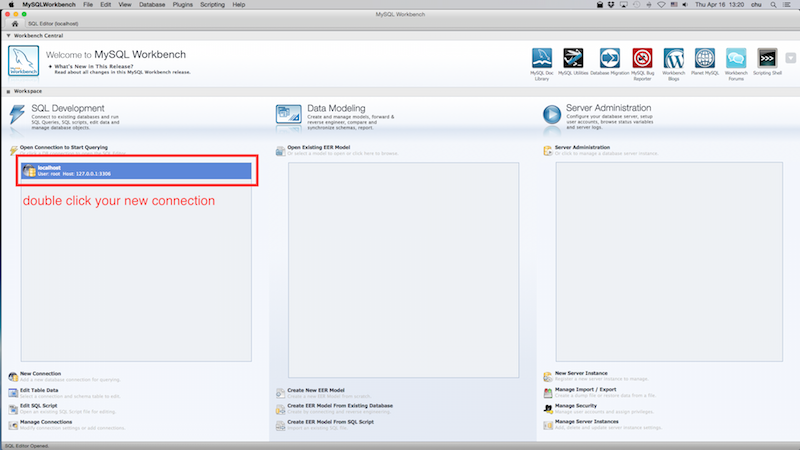
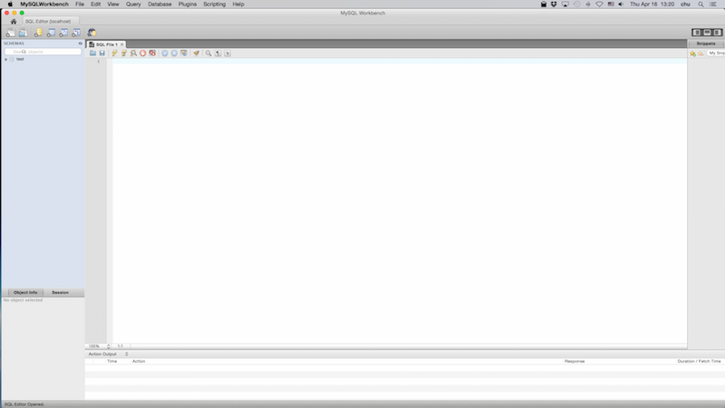
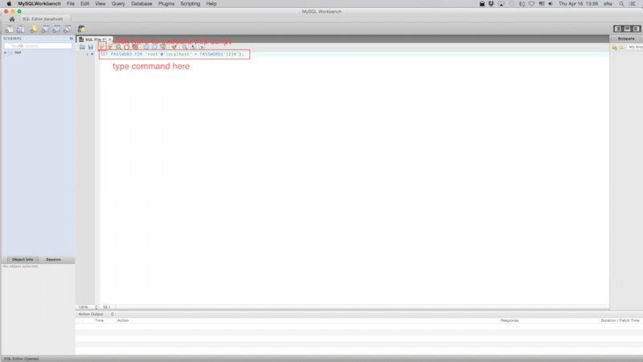
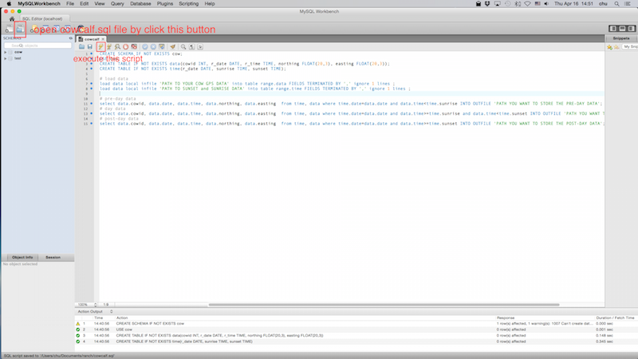

This tutorial presents how to partition a GPS data collection of cows into 3 period by utilizing MySQL database management system.
The GPS data contains GPS coordinates for each cow over a whole day. One day can be divided into 3 period: pre-sunrise, day time and post sunset. This tutorial shows the instructions of using MySQL database management software to partition the data into 3 periods: pre-sunrise, day time and post sunset. The results can benefit other range research that works on a certain period of the GPS data.
Open MySQL workbench
 click to zoom in
Click new connection button
 click to zoom in
Name the new connection
 click to zoom in
Double click new connection, you will see a new window opened
 click to zoom in
Setup password for root user (optional) in the new opened SQL File window, type
SET PASSWORD FOR 'root'@'localhost' = PASSWORD('newpwd');
 click to zoom in
Then click execute button to execute the script.
Convert your GPS data into csv format and use comma as delimiter. In total the csv file should only have 5 columns. They are: CowID,Date,Time,northing,easting
Here is an example of GPS data.
Convert your sunset/sunrise data into csv format and use comma as delimiter. In total the csv file should only have 3 columns. They are: Date,Sunrise,Sunset
Here is an example of time data.
Open cowcalf.sql file from MySQL workbench.
 click to zoom in
{kind=link}
{kind=link}
{kind=link}
{kind=link}
{kind=link}
{kind=link}